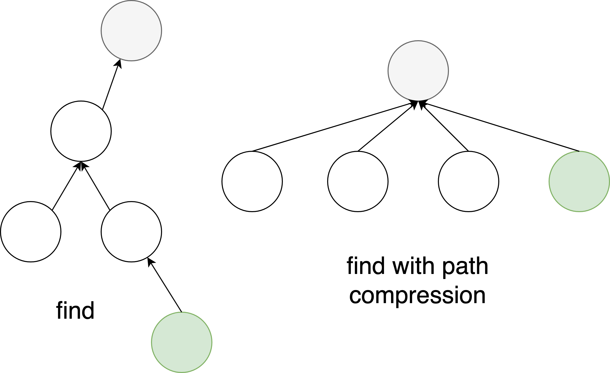
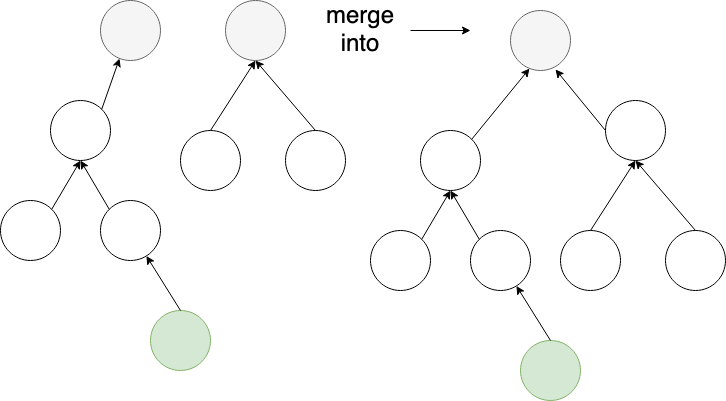

Some Other Good Resources:
The Disjoint Set, or Union Find, or DSU, is a data structure that provides some functions, suppose we are given several elements where each is a separate set, and we are also given some instructions to combine random sets, and the disjoint set can tell us if any of two elements are in the same set at any time. The data structure is pretty common in coding competitions, especially in graph problems. In this article, I will give a short introduction from the interface of a Disjoint Set, and then two optimizations on it.
Any disjoint set should support three basic operations:
Initialization: Given \(N\) elements, each element should be initialized as an isolated set.
Find: Given an element, return the set it belongs to
Merge: Given two element \(A\) and \(B\), merge the set where \(A\) is and the set where \(B\) is as one.
So you can see that DSU does not support the operation that split two sets, but a modified DSU is able to support the deletion of single element in a set, see Kattis Almost Union-Find.
Thus, we can have the code for the initialization:
vector<int> father; // father[i] = the set id of 'i'
void init(int n) {
father.resize(n);
for (int i = 0; i < n; ++i) {
father[i] = i; // the set id of 'i' is 'i' itself
}
}
For finding in DSU, this example may help you to understand, suppose there are several families are having a party, because each family has many members and each member has a pretty long length of life, they only remember who are their fathers after many decades. The eldest people in a family is called the ancestor of the family. Thus if someone wants to confirm which family he belongs to, he can ask his father, then his father can ask his grandfather, recursively, until someone asks the ancestor. Thus if we want to confirm if two members are in the same family, we can check if they have the same ancestor.
That is the find on DSU, and here is the implementation:
int find(int x) {
// find x's ancestor
if (father[x] == x) { // if x is the ancestor himself, just return
return x;
}
// otherwise, let's ask x's father
return father[x];
}
Apparently the recursion will be eventually terminated if the ancestor is found.
But it is inefficient to find the ancestor by asking fathers one by one, since who is my ancestor has nothing to do with who is my father, we can make the family member to be the son of the ancestor. It is not important that who is the ancestor, as long as there is someone can represent the whole family, thus, we can directly connect the node to the root of the tree, as below:

And the code is also easily implemented:
Thus the code can be easily implemented as below:
int find(int x) {
// if x is not the ancestor, then its father, also do the path compression
if (x != father[x]) {
father[x] = find(father[x]);
}
return father[x];
}
In the party, an ancestor of a family wants to merge with another family since both families are in a good relationship. Just like I say before, we do not care who is the ancestor as long as there is someone can represent the whole family. Thus we let one ancestor be the son of another ancestor. That is how two sets are merged in DSU, as below:

And the code is also easily implemented:
void merge(int x, int y) {
// Find the ancestors of x and y
int ancestor_x = find(x);
int ancestor_y = find(y);
// Return if they are in the same family already
if (ancestor_x == ancestor_y) return;
// Otherwise, let x's ancestor be the son of y's ancestor
father[ancestor_x] = ancestor_y;
}
When we merge two sets in DSU, no matter which set is being merged into, the result is the same. But if we choose different set to be merged into, the time complexity may be different. More specifically, if we merge a tree which represents a set in DSU with smaller size or smaller depth into another tree with bigger size or bigger depth, it is better than the vice versa. Thus we can have another array to store the size of each set, and every time we merge two sets, we will choose the smaller set to be the one that is being merged into. And this is the optimization by size.
Here is the implementation:
vector<int>sizeOfSet(n, 1);
void merge(int x, int y) {
int ancestor_x = find(x);
int ancestor_y = find(y);
if (ancestor_x == ancestor_y) return;
if (sizeOfSet[ancestor_x] > sizeOfSet[ancestor_y]) {
swap(ancestor_x, ancestor_y);
}
father[ancestor_x] = ancestor_y;
// Update the size
sizeOfSet[ancestor_y] += sizeOfSet[ancestor_x];
}
After applying the optimization of path compression and rank by size, the amortized time complexity of each operation in DSU is only \(O(\alpha{(n)})\) where \(\alpha{(n)}\) is the inverse Ackermann function, which is less than 5 for any practical input size \(n\).
For space complexity, since we only use two arrays to store information, we can easily know it is \(O(n)\) where \(n\) is the number of elements in the DSU.
Finally, we can wrap all functions mentioned above into a namespace:
namespace DSU {
vector<int> father;
vector<int> Size;
// initialization
inline
void init(int n) {
vector<int>().swap(father);
vector<int>().swap(Size);
father.resize(n);
iota(father.begin(), father.end(), 0);
Size.resize(n, 1);
}
inline
int find(int x) {
if (x != father[x]) {
father[x] = find(father[x]);
}
return father[x];
}
// merge x and y
inline
void merge(int x, int y) {
x = find(x);
y = find(y);
if (x == y) {
return;
}
if (Size[x] > Size[y]) {
swap(x, y);
}
father[x] = y;
Size[y] += Size[x];
}
// check if x and y are in the same set
inline
bool is_same_group(int i, int j) {
return find(i) == find(j);
}
}